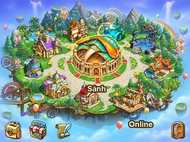
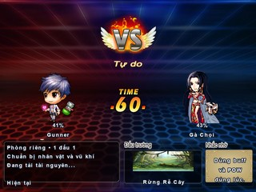
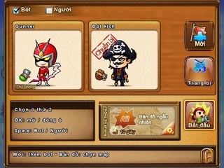
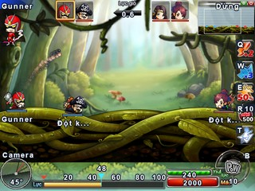

🎮 GUNNY PC – JAVA ME | SỐNG LẠI TUỔI THƠ 🎮
❤️ Dự án Gunny PC phiên bản Java ME được phát triển với mục đích học tập, trải nghiệm, giải trí và ôn lại những kỷ niệm tuổi thơ cùng anh chị em yêu thích Gunny ngày xưa.
🎯 ĐỊNH HƯỚNG PHÁT TRIỂN
- ✅ Chơi Offline hoàn toàn, không cần Internet.
- 🌐 Hỗ trợ thêm chế độ Online thông qua máy chủ cộng đồng quy mô nhỏ.
- 💎 Loại bỏ các tính năng nạp tiền, mua bán trong game.
- ⚔️ Game hoàn toàn cày chay, dễ chơi, công bằng, không Pay to Win.
- 🕹️ Tái hiện trải nghiệm Gunny PC quen thuộc trên điện thoại Java đời cũ.
📜 LƯU Ý KHI THAM GIA
Để xây dựng cộng đồng chơi game lành mạnh, mong anh chị em:
- 🚫 Không mua bán tài khoản, vật phẩm hoặc tài nguyên trong game.
- 🚫 Không tự ý chỉnh sửa file game để gian lận trong chế độ Online.
- 🚫 Không sử dụng công cụ gian lận hoặc khai thác lỗi máy chủ.
- 🚫 Không tấn công máy chủ hoặc đánh cắp dữ liệu người chơi.
- 📖 Vui lòng đọc kỹ hướng dẫn cài đặt và kết nối trước khi trải nghiệm chế độ Online.
🔧 THÔNG TIN PHIÊN BẢN
- 🎮 Tên game: Gunny PC – Java ME
- 📱 Nền tảng: Java ME (J2ME)
- 📺 Độ phân giải: 320×240 / 640×480
- ⚔️ Thể loại: Bắn súng tọa độ theo lượt, Chibi, PC, tuổi thơ
- 🌍 Chế độ: Offline / Online
- 🚧 Độ hoàn thiện: Đang phát triển và cập nhật
- 🔐 Yêu cầu Online: Cần sử dụng bản đã vá HTTPS theo hướng dẫn để kết nối máy chủ.
💌 LỜI NHẮN
Đây là dự án cộng đồng được thực hiện vì đam mê, không nhằm mục đích thương mại và không phải phiên bản Gunny chính thức.
Bản quyền trò chơi gốc và các tài nguyên liên quan thuộc về chủ sở hữu tương ứng.
Trong quá trình trải nghiệm, game có thể phát sinh lỗi hoặc chưa tương thích với một số thiết bị.
Rất mong anh chị em thông cảm, góp ý và báo lỗi để dự án ngày càng hoàn thiện hơn. 🥹❤️
Chúc anh chị em chơi game vui vẻ, cùng nhau sống lại một thời Gunny PC đáng nhớ! 🎮✨
Hình ảnh trong game
Ảnh chụp từ bản E6. Bấm vào từng ảnh để xem bản gốc nét 640 × 480.
Sảnh offline 
Xem ảnh E6 gốc 640 × 480

Đang tải trận đấu 
Xem ảnh E6 gốc 640 × 480

Phòng chờ trước trận 
Xem ảnh E6 gốc 640 × 480

Trong trận đấu 
Xem ảnh E6 gốc 640 × 480

Tải game
Chọn đúng máy, tải file JAD để cài đặt. Nếu trình duyệt không mở JAD, tải JAR rồi mở bằng trình quản lý tệp.
Nokia E72 · 320 × 240
Cài Gunny E72 · 6.6.0Nokia E6 · 640 × 480
Cài Gunny E6 · 6.6.0Chơi online
- Cài bản vá HTTPS theo hướng dẫn, rồi khởi động lại Nokia.
- Mở game, chọn Online. Cho phép truy cập mạng và chọn điểm truy cập.
- Đăng ký bằng email. Mở thư xác nhận, bấm “Xác nhận email”, quay lại game đăng nhập.
- Đấu đơn tìm người chơi thật. Tổ đội có 6 ô cho trận 3 đấu 3. Tạo phòng dành cho phòng riêng, mời bạn bằng mã phòng.
Gunny Java 6.6.0 · Không cần JavaScript để đọc trang và tải file.